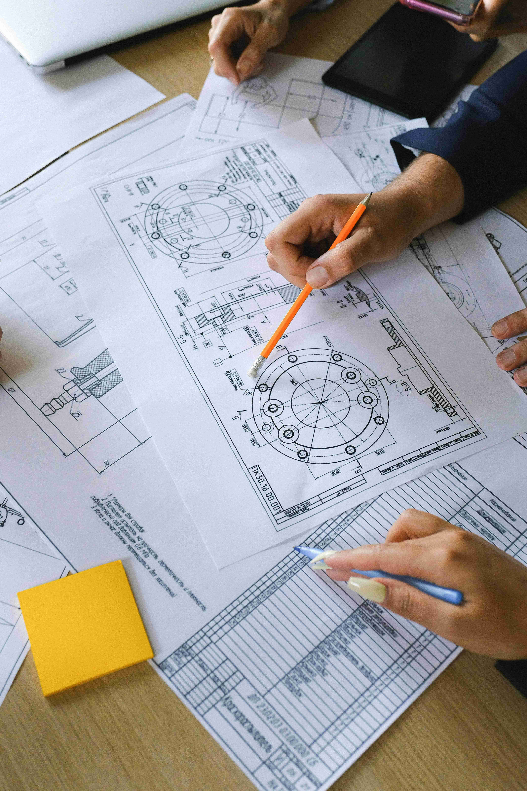

About Me
I'm Fadil, a multidisciplinary engineer leveraging scientific programming to research mechanical systems, nuclear energy, and fluid dynamics. Get a deep dive into my background, core competencies, and career progression.
View Full ResumeFeatured Work
Browse through engineering deliverables spanning mechanical systems, nuclear energy, fluid dynamics, technical design, and scientific programming.
Explore Portfolio
Publications
Read a curated list of peer-reviewed journal articles and academic theses, focusing on computational modeling, fluid dynamics, and nuclear energy systems.
View Publications